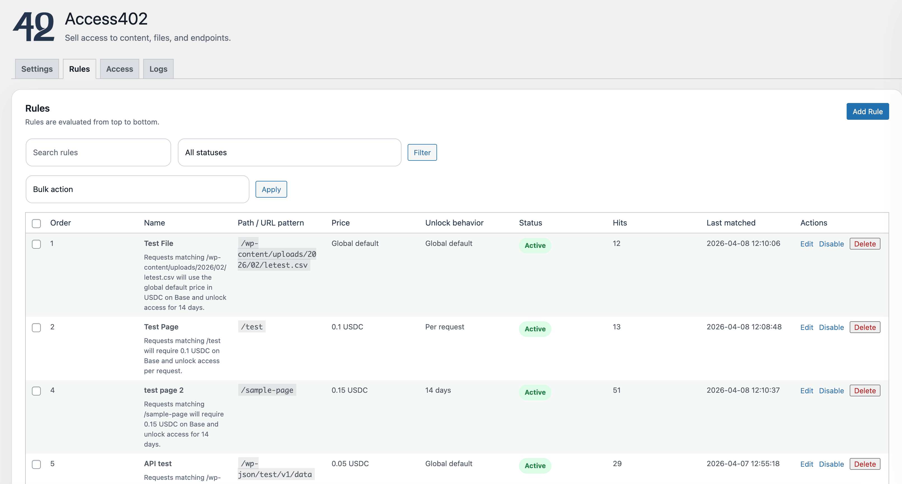
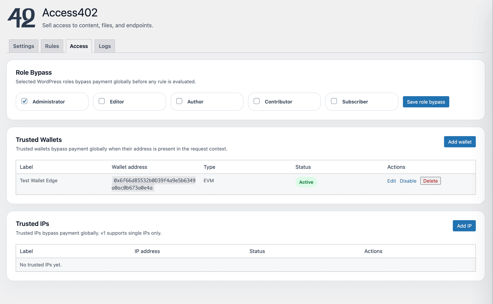
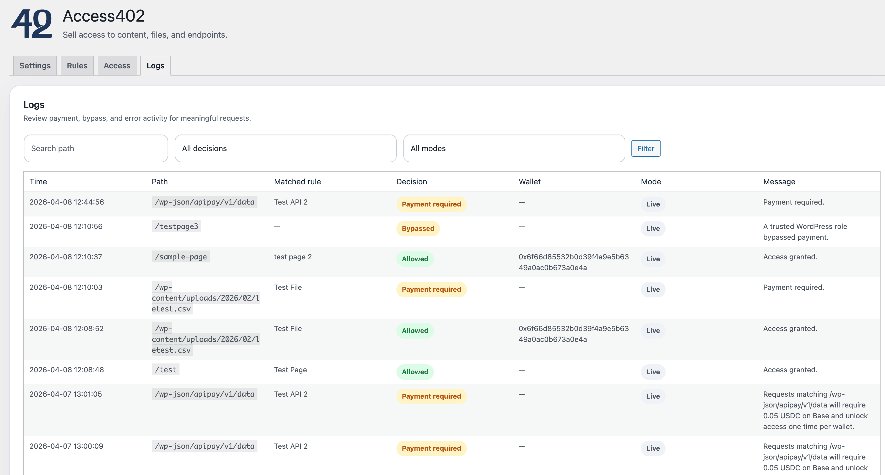

Content access
Articles, premium libraries, structured pages, and knowledge collections can be gated and monetized instead of being left as unmanaged machine-readable inventory.
Access402 helps teams sell content, data, and workflows to AI agents through paid, controlled access. The goal is to remove the operational friction from configuring rules, monetization, and delivery so agents can pay to access the resources and workflows they need.
Access402 is focused on the layer between existing systems and AI agents: making high-value content, data, workflows, files, and endpoints available through paid access in a way that is controlled, priced, and operationally straightforward.
Articles, premium libraries, structured pages, and knowledge collections can be gated and monetized instead of being left as unmanaged machine-readable inventory.
Reports, exports, media packages, generated bundles, and gated downloads can be delivered as controlled products with clear pricing and fulfillment rules.
APIs and other endpoints can be protected, packaged, and monetized rather than exposed through fragmented access logic and manual operational work.
Access402 is designed to make paid agent access, content rules, and operational visibility feel concrete and manageable for teams selling digital products.

Define path and endpoint rules, pricing, unlock behavior, and policy ordering from one place.

Manage role bypasses, trusted wallets, and trusted IPs without scattered custom configuration.

Review payment-required decisions, allowed requests, and bypass activity with operational visibility.
Access402 is built around a practical model: connect the systems teams already use, define paid access once, and make it easier for AI agents to buy and retrieve the content, data, and workflows they need.
Start with the systems that already own the content, files, or machine-facing interfaces. That is where the business value already exists.
Set the rules for what is open, protected, metered, or premium, and determine how those assets or endpoints should be packaged and monetized.
Let AI agents request approved outputs through a cleaner access layer, with payment, monetization, and fulfillment built into the flow.
If a team already has content, data, workflows, files, or endpoints worth selling, Access402 is being built to make paid agent access far easier to set up and manage.